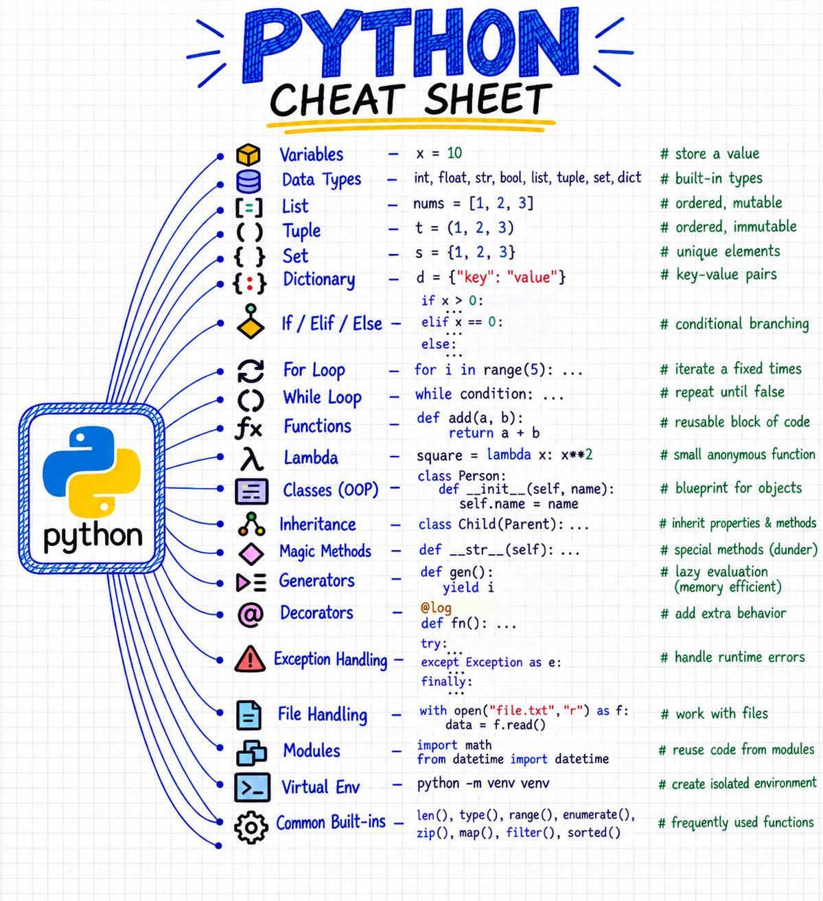
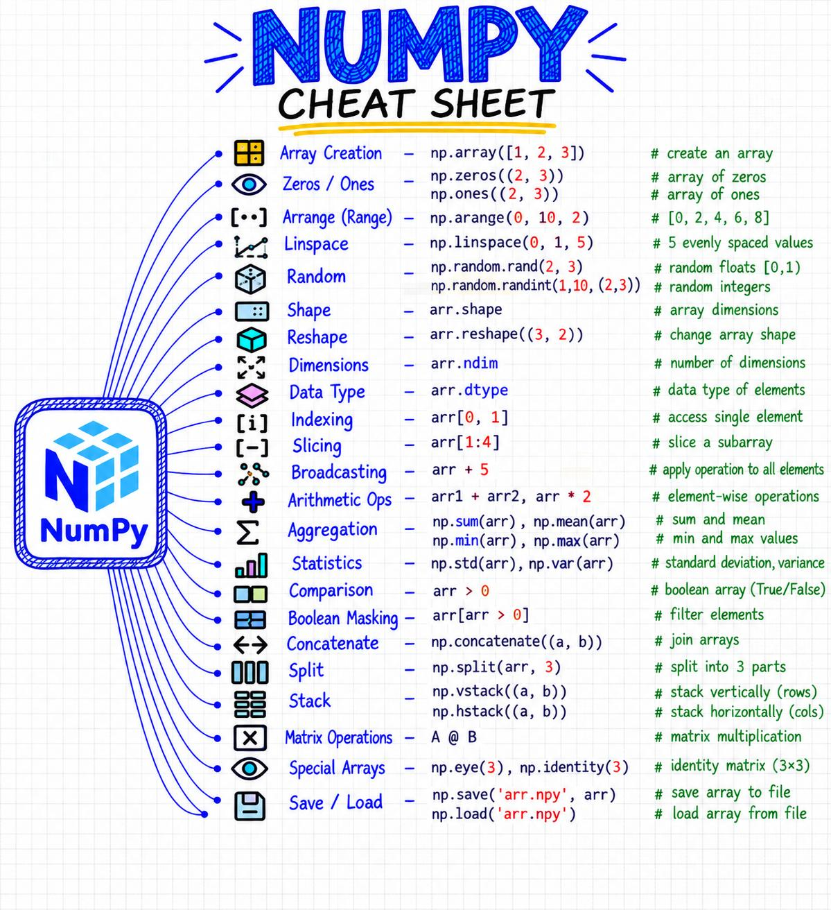
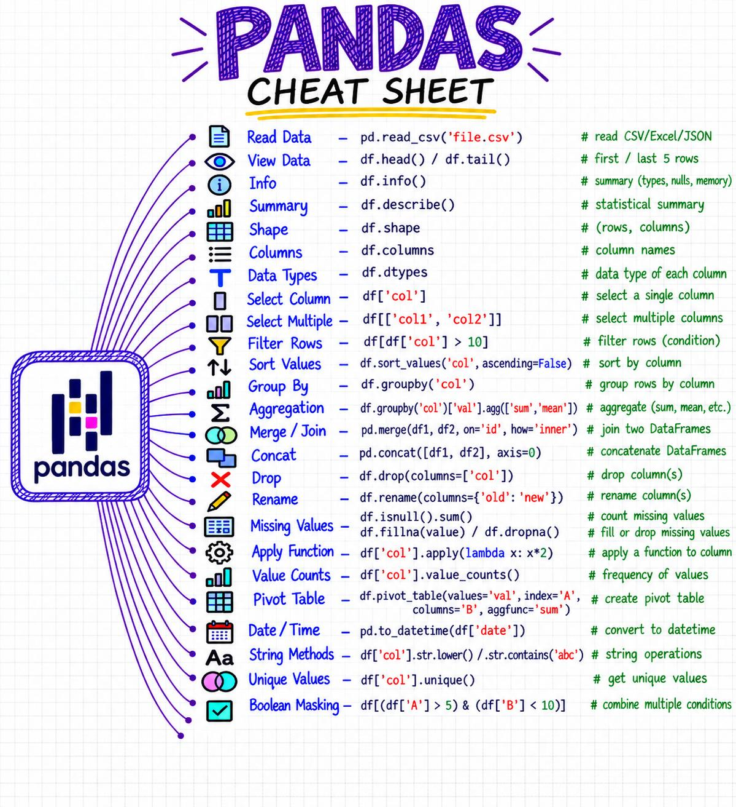
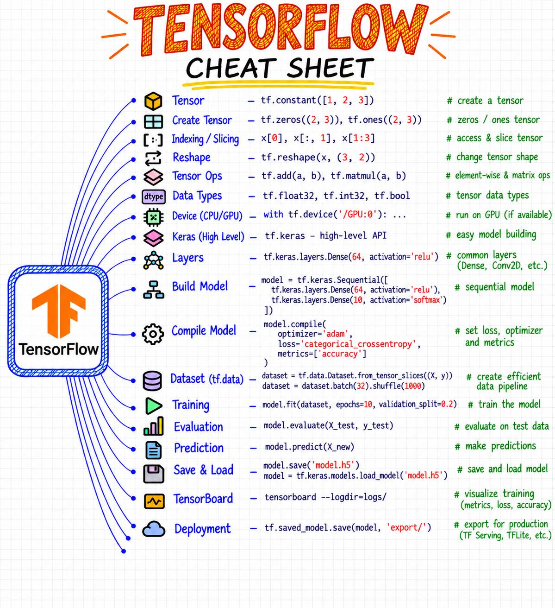
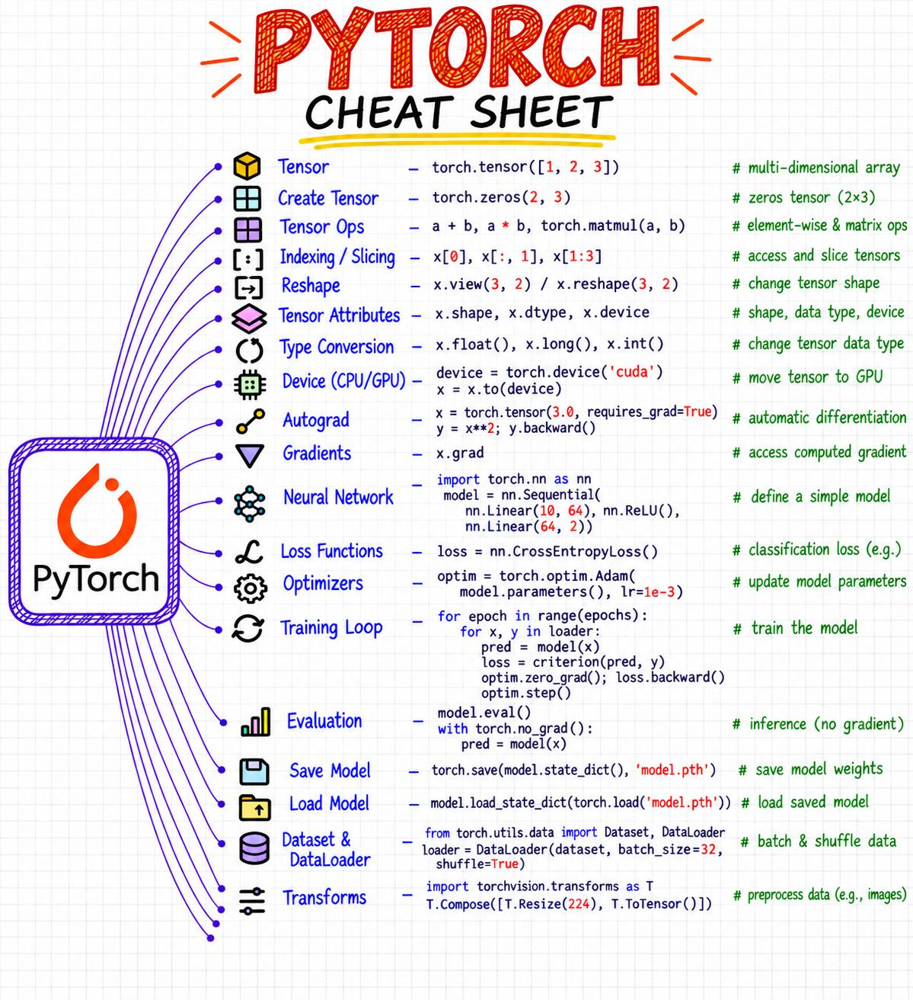

Chuletas visuales
Catorce chuletas de una página con las órdenes más usadas de cada librería del curso, en el orden en que aparecen: primero Python, después los datos, los gráficos y los modelos, y al final Terraform, para llevar un modelo a la nube. Python, NumPy, Pandas, TensorFlow y PyTorch tienen dos versiones: la segunda, más resumida, está debajo de la primera. Toca una imagen para verla a tamaño completo o descargarla.
Son infografías que circulan en redes sociales (en inglés, sin autor indicado) y se reproducen tal cual. Debajo de cada una hay una nota Ojo con lo que conviene matizar o lo que ya ha cambiado en las versiones actuales, y un enlace a la parte de los apuntes donde se explica con calma.
Python
Ojo: except Exception as e captura
cualquier error y puede esconder fallos de verdad; mejor capturar el
error concreto (ValueError,
FileNotFoundError…). map y filter
funcionan, pero en Python se suele preferir una comprensión:
[int(x) for x in datos].
En los apuntes: Teoría, secciones 1 a 5 y ejercicios E1–E12 y E28–E37.
Otra versión, más resumida y dibujada a mano.

Ojo con esta versión: for no sirve solo
para «repetir un número fijo de veces»: recorre cualquier secuencia (una
lista, una cadena, las filas de un archivo). El decorador
@log no viene con Python: hay que escribirlo antes, como se
explica en Decoradores
paso a paso. Y python -m venv venv solo
crea el entorno virtual: después hay que activarlo con
source venv/bin/activate (Linux y macOS) o
venv\Scripts\activate (Windows).
NumPy
Ojo: np.random.rand es la forma
antigua. Hoy se recomienda un generador con semilla, que da resultados
repetibles: rng = np.random.default_rng(42) y después
rng.random((2, 3)). Y A * B multiplica
elemento a elemento; el producto de matrices es A @ B.
En los apuntes: Teoría 7.1 y ejercicios E18–E19.
Otra versión, más resumida y dibujada a mano.

Ojo con esta versión: «Arrange» está mal escrito: la
función es np.arange (a range, «un rango»), y
np.arrange da AttributeError.
np.split(arr, 3) solo funciona si el tamaño se puede
dividir entre 3 en partes iguales; si no, da ValueError y
hay que usar np.array_split. Para los aleatorios, mejor
rng = np.random.default_rng(42) que
np.random.rand y randint (ver la nota de la
primera versión).
Ampliado en los apuntes: Teoría 7.1:
linspace, eye, máscaras, unir y dividir
arrays, y guardar con np.save y np.savez.
Pandas
Ojo: df.fillna(...),
df.dropna(), df.drop(...) y
df.rename(...) no cambian df:
devuelven una tabla nueva que hay que guardar
(df = df.dropna()). df.groupby('col') sola no
calcula nada hasta que se le añade una agregación. Y antes de usar
apply(lambda x: x*2), la versión directa
df['col'] * 2 hace lo mismo mucho más rápido.
En los apuntes: Teoría 7.2 y 7.3 Pandas a fondo; ejercicios E20–E22 y E53–E58.
Otra versión, más resumida y dibujada a mano.

Ojo con esta versión: pd.read_csv solo
lee CSV: para Excel es pd.read_excel y para JSON,
pd.read_json. isnull() e isna()
son lo mismo (en los apuntes se usa isna). Siguen valiendo
las notas de la primera versión: fillna,
dropna, drop y rename devuelven
una tabla nueva que hay que guardar.
Polars
Ojo: Polars es una alternativa a Pandas, mucho más
rápida con tablas grandes, pero se escribe distinto: no hay
loc ni índice de filas, y casi todo se hace con expresiones
pl.col(...). En el curso se usa Pandas, que es lo que
esperan scikit-learn, Seaborn y casi todos los tutoriales.
fill_null(0) tiene el mismo problema que en Pandas:
rellenar con 0 puede inventar datos y bajar las medias.
En los apuntes: las mismas operaciones en Pandas, en la Teoría 7.3.
Matplotlib
Ojo: plt.legend() solo muestra algo si
antes se ha dado nombre a cada serie:
plt.plot(x, y, label="Grupo A"). Con
fig, ax = plt.subplots(...) se dibuja en cada eje con
ax.plot(...) y ax.set_title(...), no con
plt.title(...). plt.savefig va
antes de plt.show(), porque después la
figura queda vacía.
En los apuntes: Teoría, sección 8 y 14.5 Seaborn para EDA; ejercicios E23–E24.
scikit-learn
Ojo: en «Preprocessing»,
scaler.fit_transform(X) se aplica a todos
los datos antes de dividir: eso es fuga de datos,
porque el escalador ya ha visto los de prueba. Hay que ajustarlo solo
con X_train o, mejor, meterlo en un Pipeline
(como en la propia chuleta, más abajo). El «Example Workflow» del final
tiene el orden correcto: dividir antes de preprocesar.
En los apuntes: Teoría 14.4 y la UD5, sobre todo la sección 6.
Más chuletas de ML, en castellano: las del curso CS229 de Stanford (A. y S. Amidi, licencia MIT) están traducidas al castellano: aprendizaje supervisado, no supervisado y profundo, consejos y trucos (métricas, validación, sesgo y varianza) y repasos de probabilidad y álgebra. Llevan fórmulas de nivel universitario; la de «consejos y trucos» es la que mejor encaja con la UD5.
TensorFlow
Ojo: guardar en .h5 es el formato
antiguo; con Keras 3 (TensorFlow 2.16 y posteriores) se usa
model.save("modelo.keras").
categorical_crossentropy necesita las etiquetas en
one-hot; si son números de clase (0, 1, 2…), hay que usar
sparse_categorical_crossentropy. TensorFlow Lite se llama
ahora LiteRT.
En los apuntes: Teoría 14.7, redes neuronales desde cero y la UD3, donde se usa Keras con imágenes.
Otra versión, más resumida y dibujada a mano.

Ojo con esta versión: en «Dataset»,
.batch(32).shuffle(1000) está al revés: así solo se baraja
el orden de los lotes, y cada lote tiene siempre los mismos ejemplos; lo
correcto es .shuffle(1000).batch(32). En «Training»,
validation_split=0.2 no funciona con un
tf.data.Dataset (solo con arrays): la validación se pasa
con validation_data. Para desplegar, en Keras 3 se usa
model.export("export/") en vez de
tf.saved_model.save, y .h5 es el formato
antiguo (.keras).
Ampliado en los apuntes: Datos
por lotes con tf.data, TensorBoard y exportar el
modelo.
PyTorch
Ojo: al «Training Loop» le faltan las dos líneas que
van antes de loss.backward(): calcular la predicción
(pred = model(x)) y el error
(loss = loss_fn(pred, y)). Para guardar, lo recomendado es
guardar solo los pesos,
torch.save(model.state_dict(), "modelo.pth"), y cargarlos
con model.load_state_dict(torch.load("modelo.pth")).
Guardar el modelo entero, como en la chuleta, da error al cargarlo desde
PyTorch 2.6, salvo que se añada weights_only=False. El
ejemplo de «Autograd» es la misma idea que la retropropagación a
mano de la teoría.
En los apuntes: Teoría 12.2, dónde encaja PyTorch y 14.7.
Otra versión, más resumida y dibujada a mano.

Ojo con esta versión: el «Training Loop» usa
criterion, que no está definido (NameError):
la función de pérdida se guardó en loss
(loss = nn.CrossEntropyLoss()). Y si se «arregla» cambiando
criterion por loss, el bucle sobrescribe
loss con el valor del error y en el segundo lote ya no es
una función. Hay que darles nombres distintos. Con
device = torch.device('cuda'), el x.to(device)
da error en un ordenador sin GPU de NVIDIA (lo habitual en el aula):
mejor "cuda" if torch.cuda.is_available() else "cpu", y
mover también el modelo con
model.to(device). Después de model.eval() hay
que volver a model.train() antes de seguir entrenando. Y
T.Resize(224) no deja la imagen cuadrada: para 224×224 es
T.Resize((224, 224)). Lo que esta versión hace bien es
guardar con state_dict, como se recomienda.
Ampliado en los apuntes: PyTorch paso a paso, con el bucle completo corregido.
Terraform
Terraform no es una librería de Python: es la herramienta con la que se crean servidores y servicios en la nube describiéndolos en archivos (infraestructura como código). Aparece aquí porque es el paso siguiente a desplegar un modelo: crear el sitio donde vive.
Ojo: brew install terraform ya no
funciona, porque Homebrew dejó de aceptar versiones nuevas tras el
cambio de licencia de 2023; ahora es brew tap hashicorp/tap
y brew install hashicorp/tap/terraform. El
data "aws_ami" necesita un filter con el
nombre de la imagen: sin él devuelve la última imagen cualquiera de
Canonical. El bloque backend "s3" no va suelto: va
dentro de terraform { ... }. La región
ap-south-1 es Bombay; desde Galicia lo normal sería una
región europea (eu-west-3, París, o
eu-south-2, España). Y lo más importante, que la chuleta no
dice: el archivo terraform.tfstate puede guardar
contraseñas en texto claro y nunca se sube a Git.
En los apuntes: Teoría 13.8, infraestructura como código, con un ejemplo gratis que no necesita cuenta en la nube, y el ejercicio E90.